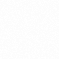

<!DOCTYPE html>
<html lang="ja">
<head>
	
	<link rel="stylesheet" type="text/css" href="assets/css/style.css">
	<meta charset="UTF-8">
	<meta name="viewport" content="width=device-width,initial-scale=1">

	<title>戸倉NPサンプルページ</title>


</head>
<body>
	<main>
		<section>
			<div class="video_wrappar">
				<!--  -->

			  <!-- <video src="assets/img/bk_sky1.mp4" autoplay muted loop playsinline ></video>
 -->				<div class="map_container">
						<div class="map base">
							
						</div>
						<div class="map main_title">
								
						</div>
						<div class="map sub_title">
								
						</div>
						<div class="map index ">
							
						</div>
						<div class="map label vertical">
							
						</div>
						<div class="map label_sec">
							
						</div>
						<div class="map item">
							
						</div>
						<div class="map keybox" id="">
							
						</div>
						<div class="map eagle shake">
							
						</div>
						<div class="map compass">
							
						</div>
					

					<map name="tgitem">
					  <area onFocus="this.blur();" shape="rect" coords="64,70,78,86" href="https://www.tamipack.jp/" alt="たみ子の海パックホームページへ遷移" target="blank" />
					  <area onFocus="this.blur();" shape="rect" coords="50,92,85,108" href="#" alt="釣り体験" target="blank" />
					  <area onFocus="this.blur();" shape="rect" coords="91,108,121,134" href="#https://o-eels.org/" alt="おきなくらイールズホームページへ遷移" target="blank" />
					  <area onFocus="this.blur();" shape="rect" coords="143,90,179,100" href="#" alt="漁業体験" target="blank" />
					  <area onFocus="this.blur();" shape="rect" coords="142,66,167,79" href="https://m-inuwashi.jp/" alt="南三陸町ネイチャーセンターホームページへ遷移" target="blank" />
					  <area onFocus="this.blur();" shape="rect" coords="124,38,148,55" href="http://studio-elephant.com/flow/" alt="波伝の森山学校ホームページへ遷移" target="blank" />
					  <area onFocus="this.blur();" shape="rect" coords="105,71,134,81" href="http://kawatouminovisitorcenter.jp/umi/index.html" alt="海のビジターセンターホームページへ遷移" target="blank" />
					  <area onFocus="this.blur();" shape="rect" coords="24,67,52,82" href="神割キャンプ場ホームページへ遷移" alt="神割キャンプ場ホームページへ遷移" target="blank" />
					  <area onFocus="this.blur();" shape="rect" coords="87,59,115,71" href="https://www.pref.miyagi.jp/soshiki/sz-seinen/" alt="志津川自然の家ホームページへ遷移" target="blank" />
					</map>
					</div>
			<video src="assets/img/bk_sky5.mp4" autoplay muted loop playsinline ></video> 
		</div>
	</section>
	</main>
	<aside>


	</aside>


<script type="text/javascript" src="assets/js/app.js"></script>
<script src="https://code.jquery.com/jquery-3.3.1.min.js"></script>
<script src="assets/js/jquery.rwdImageMaps.min.js"></script>
<script>
        $('img[usemap]').rwdImageMaps();
</script>

</body>

